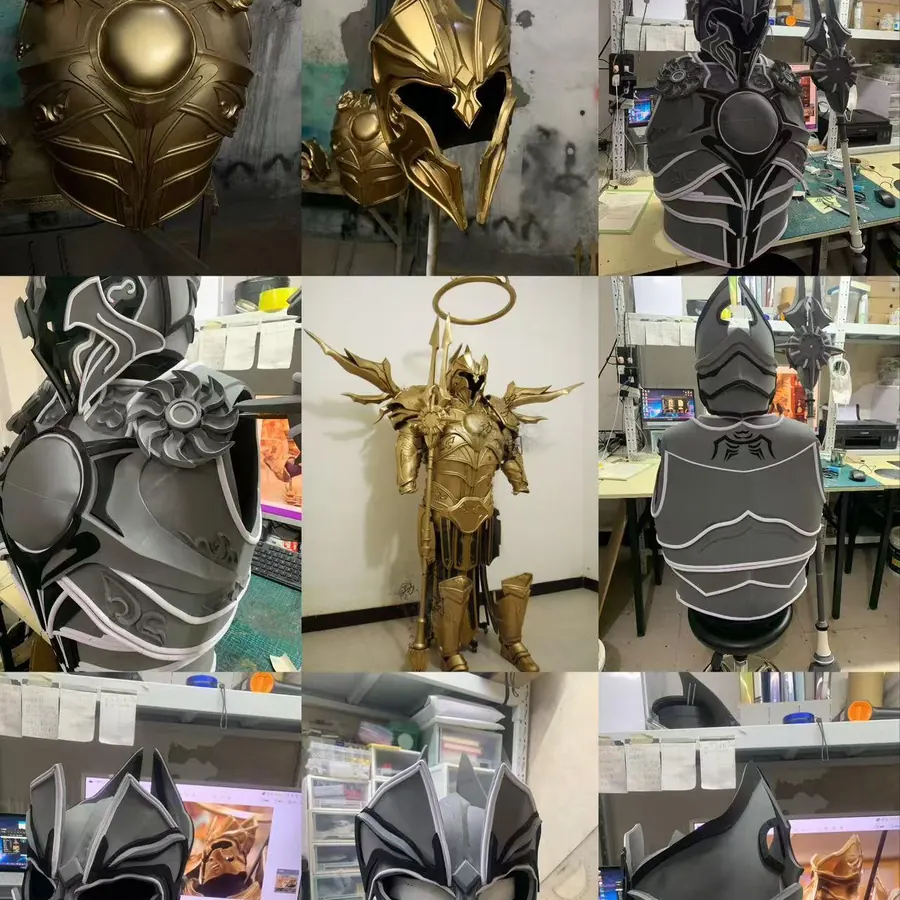

第一步：确认场地条件
动漫展台搭建前，需要拿到展馆或商场的平面图、层高、承重、用电要求、消防要求、进场通道尺寸和搭建时间。大型舞台道具、机甲装置和拍照装置不能只按视觉图制作，还要确认是否能进入电梯、货梯和展位入口。
第二步：把视觉图拆成结构图
角色背景墙、立体门头、灯光装置、互动道具和舞台布景都需要拆解为材料、尺寸、固定方式和运输模块。彩云端定制会根据项目需要选择EVA、泡沫雕刻、木作、金属骨架、喷绘、亚克力、毛绒和仿皮革等工艺。
第三步：提前处理安全细节
观众会靠近拍照的区域，要避免尖锐边角、易脱落结构和不稳定重心。演员会使用的舞台道具，则要控制重量和握持舒适度。涉及电源、灯带、机械活动结构时，还要留出维修口和备件，减少现场故障。
第四步：包装、运输和撤展
很多客户只关注制作费用，却忽略包装运输。可拆装结构、编号包装、现场安装图和撤展回收方式，会直接影响项目执行成本。尤其是跨城市巡展，模块化设计会比一次性布景更适合长期使用。
结语
动漫展台搭建和舞台道具制作的核心，是把创意图转化为安全、稳定、可运输、可互动的实体内容。彩云端定制可为漫画展、商场动漫节、品牌快闪和文旅演艺活动提供完整制作方案。